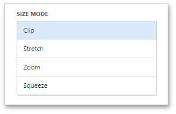

Image Settings
This topic describes settings related to the representation of Image dashboard items.
Image Size Mode
You can specify the image size mode that defines how the image fits within the dashboard item.
To do this, go to the Options menu and select the required size mode from the list.

The following modes are available.
| Size Mode | Description |
|---|---|
| Clip | The image is clipped if it is larger than the Image dashboard item. |
| Stretch | The image within the Image dashboard item is stretched or shrunk to fit the size of the Image dashboard item. |
| Squeeze | If the dimensions of the Image dashboard item exceed those of the image it contains, the image is shown full-size. Otherwise, the image is resized to fit the dimensions of the Image dashboard item. |
| Zoom | The image is sized proportionally without clipping, so that it best fits the Image dashboard item. The closest fitting side of the image (either the height or the width) will be sized to fit the dashboard item, and the remaining side (height or width) will be sized proportionally, leaving empty space. |
Image Alignment
To specify how the image is aligned within the dashboard item, use the Horizontal Alignment and Vertical Alignment options in the Image's Options menu.